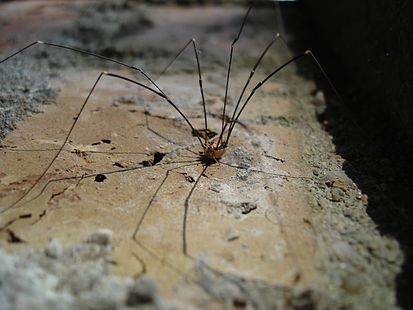

Сеноко́сцы[1] (лат. Opiliones) — отряд членистоногих из класса паукообразных. По данным на 2019 год, насчитывалось более 6650 ныне живущих видов сенокосцев[2], подразделяемых на 4 подотряда. Самый большой подотряд — Laniatores — насчитывает свыше 4 тысяч видов. Простонародное название сенокосцев — косиножки.
Сенокосцы напоминают пауков, но, в отличие от них, имеют сегментированное брюшко, соединённое с головогрудью широким основанием, а не стебельком. Туловище обычно небольшое, 1—5 миллиметров длиной (22 миллиметра у самого большого представителя сенокосцев, Trogulus torosus), обычно яйцевидное. Ноги иногда чрезвычайно длинны — могут достигать 16 сантиметров. На лапках имеются коготки, иногда двойные.
Сенокосцы распространены практически повсеместно и встречаются в самых разных местах обитания — от лесов и лугов до пустынь. Зачастую сенокосцы поселяются и в квартирах. Некоторые виды поднимаются в горах до границ вечных снегов. Особенно богаты сенокосцами лиственные и смешанные леса; обычны они и в городских ландшафтах. Большинство сенокосцев — ночные хищники; днём их легко заметить замершими на стенах в характерной позе с раскинутыми ногами.